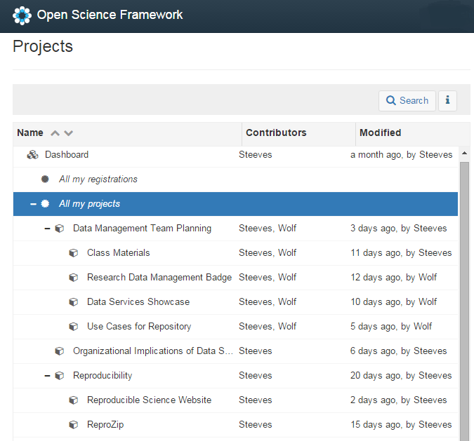
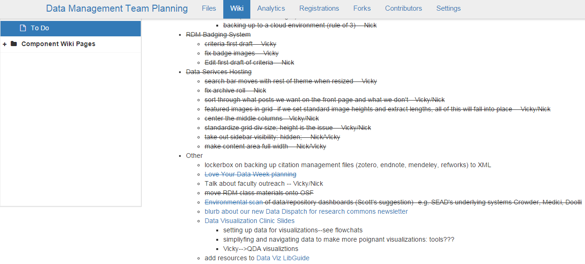
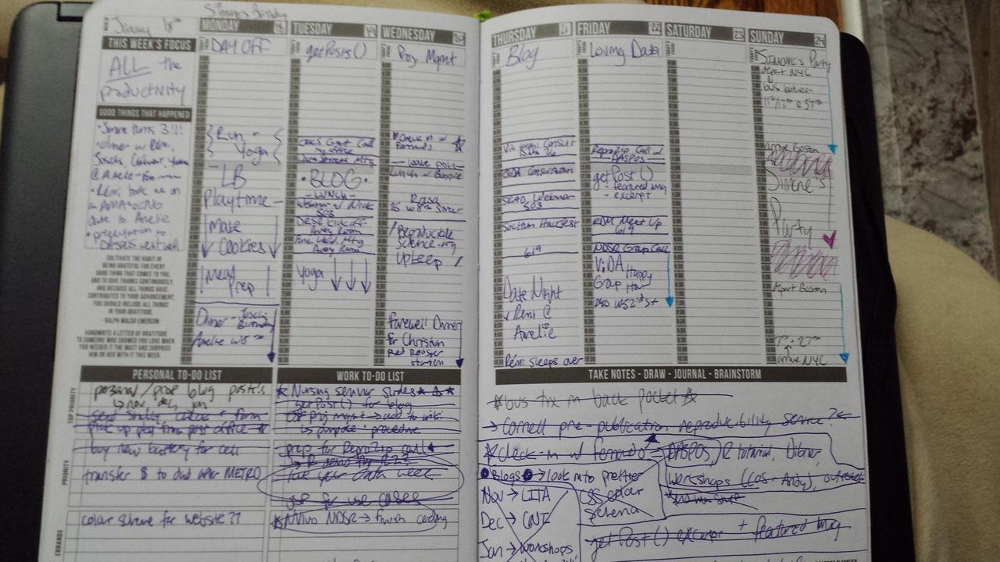

Goals for 2016 and How I'll Make Them Happen
If you've been following this blog for a while, or even took a quick look on my resume page, you'll see I haven't been at my position at NYU for very long. January 3rd marks the fifth month (to the day!) that I've been NYU's official "Research Data Management and Reproducibility Librarian." There was a bit of an adjustment period where I just spent the majority of my time introducing myself to my colleagues, getting to know what my daily workflow would look like, and brainstorm with Nick about what our services will look like, some good groups for targeted outreach, and what classes we are going to teach as a part of Data Services typical course offerings.
This was all well and good, but since I started in August I missed the goal-setting timeline that is typical for my colleagues. As such, I wanted to make some, and my supervisor in the library thought it would be a good way to measure growth besides. Plus, since I'm pretty early career, setting goals for a measurable outcome was kind of new for something not project based. This was just trying to assess my own growth, not necessarily the growth of a project I'm working on.
In the end, I made 7 goals for this 2015-2016 academic year:
- Research: Currently I'm involved in a few different research projects, all collaborations, across three different domains/topics. I'd really like to finalize and publish at least one of these projects this year into a peer-reviewed, academic journal.
- Reproducibility as Research: I would also like to look at reproducibility more specifically as a research target area. I am really interested in learning more about reproducibility and possible applications or crossover with library services.
- Teaching Me How to Teach: I would love to learn more about teaching and pedagogical theory, as its own entity. While I have certainly taught before, I've never attended classes or the like on the actual practice of instruction, evaluating instruction, active teaching, diversity in instruction, etc. I think that I would benefit from taking some workshops on teaching. I'm going to attend at least three of these sessions by the end of the academic year at a minimum.
- Multimedia Instruction/Outreach: I'm super interested in making short, two-to-five minute videos outlining tools that could be of use in managing data, such as the Open Science Framework, Open ICPSR, converting files to archival formats, etc. I think a varied approach to disseminating RDM information would get us some more love. I would like to complete two of these "how-to" videos by the end of this academic year.
- Build Up the Curriculum: I want to expand instructional offerings from three classes a semester to six classes a semester at a minimum, starting in the spring 2016 semester. Approaching the entire RDM lifecycle in one class can be overwhelming to some first-time users. By offering classes that separately address each aspect of the RDM lifecycle (i.e. data creation, data documentation, etc.) it allows for a more in-depth and digestible delivery of information.
- Targeted Outreach: I want to incorporate some more relationship building into my daily workflow. I think that by entering a 1-1 dialogue with certain users would help to disseminate information on RDM services at NYU, and hopefully start a dialogue about RDM and reproducibility leading to some action items within the target group. By the end of this academic year, I will choose one department to make direct inroads with and speak 1-1 with the faculty members of that department.
- Improving the Libguide: I'm really interesting in building up a corpus of online knowledge base through expanding the LibGuide as much as possible. To accomplish this, every Friday I plan on setting aside an hour to update the LibGuide and add instructional and informational offerings.
I have a twofold method to keeping these goals in order and make sure I "get 'er done" (ew sorry for this). The first one is more for the collaborative projects I've listed under these goals, and that's the Open Science Framework(OSF) I mentioned under goal #4.
The OSF is a FREE tool created by the non-profit, the Center for Open Science, to integrate with resarchers' daily workflows. Besides allowing for maximum control over data access (with really robust controls for creating labs/collaborators on specific projects, and even more granularly, specific components of specific projects), the OSF helps people document and archive materials from all parts of the research data lifecycle, from study design to data to publication. What's also great is that the OSF is completely open source, which means there is an API and lots of addon features that you can use. My favourites are the Google Drive and GitHub addon (probably because I use it the most), but it also has integration with Amazon S3, Box, Dataverse, Dropbox, Figshare, OSF Storage, Mendeley, and Zotero.
All my projects listed on OSF, with Nick as my collaborator on almost all.
Nick and I use the OSF for all our projects for Team RDM in Data Services. We use it to track files in each of our individual, NYU-Google Drive accounts, link in code that we write from our respective GitHubs, and keep metrics open for our public projects as a great boost to our reviews. It's been really useful, also because of the integrated Wiki feature that lets us keep robust to-do lists for each other/our team and allows gives us a space to document explicitly what we have been doing, how we've been doing it, how we are disseminating information, and how we are maintaining all the different aspects of our RDM outreach and instructional work.
Plus, it's a standardized markup so we can do some cool strikethrough effects and style it like any other Wiki page. As someone who lives for striking out tasks, this was honestly one little tiny feature I just absolutely adored.
Nick and I are super productive, as you can see ;)
The second one is strangely analog. I always make a plan in my Passion Planner to make sure I keep my behind in gear and keep a big picture focus of all the things I want to get done before August 2016. I'm a proud member of the #PashFam on Facebook and Instagram, and using my Passion Planner I've definitely kept up with a lot of goals that may or may not have previously fallen to the wayside. It just has a great interface to goal tracking and accountability that has helped me refine my focus professionally and personally.
Look at all the crossed-off goals and "to-do's!"
Plus, Passion Planner has really great inspiration quotes on each page, along with a “Good Things That Happened” section each week for me to fill out. As a generally negative person, I genuinely feel like this helped to keep me positive and less bogged down in my anxiety. The paper is super thick also so I like to draw with my multi-colored pens to make everything seem just that little bit better.
Passion Planner works for me because it's not only a place to keep my schedule, but also a place to doodle, journal, write notes, and do some short and long-term goal setting activities complete with weekly to-do-lists and monthly check-ins. Each week and day have a "Focus" section, where you write in your focus for that week, and then each individual day. As someone who loves to multitask but also loves to plan (almost obsessively loves to plan) this has kept me super on-track for getting things done, especially since there are separate to-do lists on each week for my personal and professional life. I'm kind of obsessed with it. I have like 3 of these in the wings for when I finish this one. What's cool is you can also download it for free as a pdf!

Image from Passion Planner website